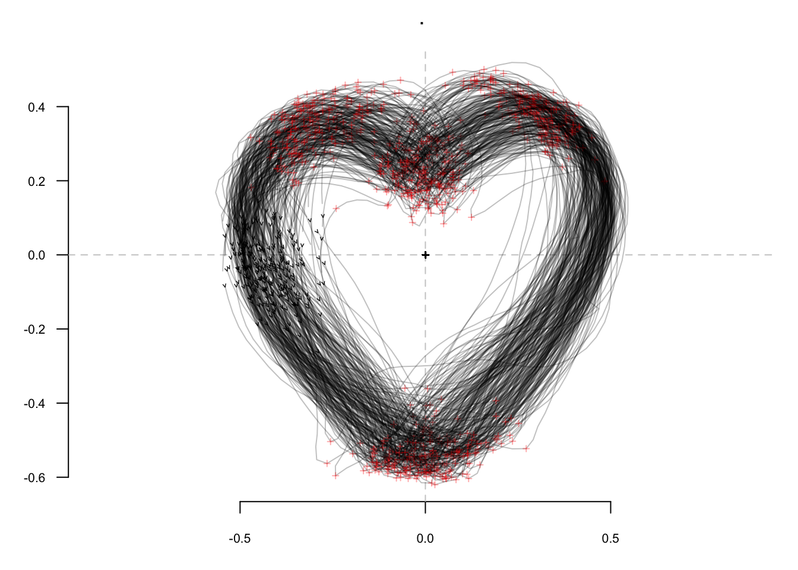
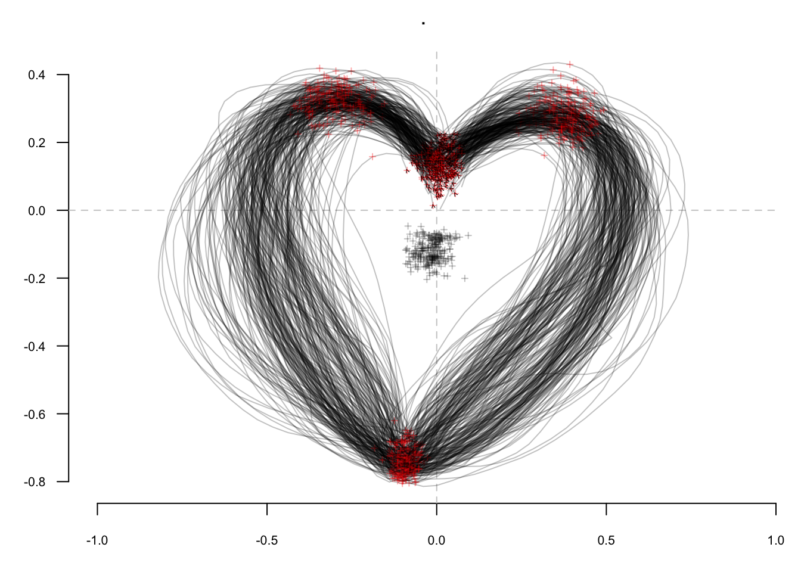
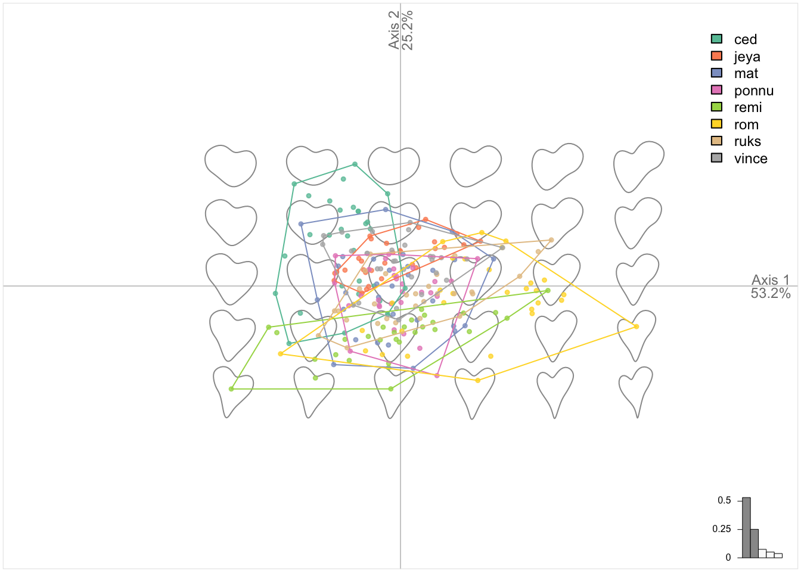
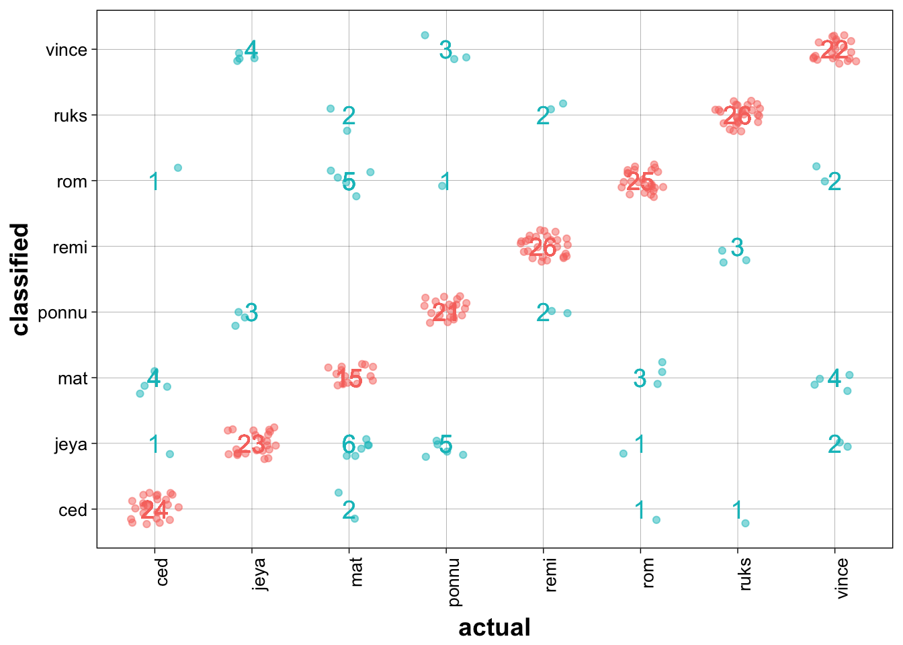

Momocs
Part of MomX


The goal of Momocs is to provide a complete, convenient, reproducible and open-source toolkit for 2D morphometrics.
It includes most common 2D morphometrics approaches on outlines, open outlines, configurations of landmarks, traditional morphometrics, and facilities for data preparation, manipulation and visualization with a consistent grammar throughout.
It allows reproducible, pipeable, complex morphometric analyses and other morphometrics approaches should be easy to plug in, or develop from, on top of this canvas.
Its core functions are borrowed from hinges on the core functions developed in the must-have book Morphometrics with R by Julien Claude (2008).
- Check the online doc and the tutorials there
-
You’re welcome to implement ideas, propose new ones, review the code, the helpfiles or the vignettes, report bugs, ask for help and propose to collaborate with me: here on GitHub or there:
bonhomme.vincent@gmail.com.
Installation
The last released version can be installed from CRAN with:
install.packages("Momocs")But I recommend using the development version from GitHub with:
# install.packages("devtools")
devtools::install_github("MomX/Momocs")Example
This is a basic example of a complete analysis doing: inspection, normalization of raw outlines, elliptical Fourier transforms, dimmensionality reduction and classification, using a single line.
library(Momocs)
hearts %T>% # a built in dataset
stack() %>% # family picture on raw outlines
fgProcrustes() %T>% # full generalized Procrustes alignment
coo_slide(ldk=1) %T>% # redefine an homologous 1st point
stack() %>% # another family picture after fgProcrustes
efourier(6, norm=FALSE) %>% # elliptical Fourier transforms
PCA() %T>% plot(~aut) %>% # a PCA and a PC1:2 plot
LDA(~aut) %>% plot_CV() # an LDA and confusion matrix